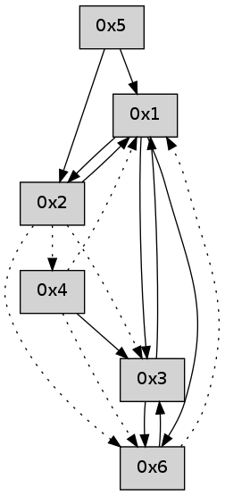

>> << IDX [start] -100 -25 -5 +0 +5 +25 +100 [500.1315341]
 Previous packets
----------------------------------------------------------------------
495.210454 beacon01(adaf) #0 coord=01,02,05,03,04,06 cycle=432.0ms assoc
-- color-indic=0 64 ae d0
495.220415 beacon02(adaf) #0 coord=01,02,05,03,04,06 cycle=432.0ms assoc 64 ff 2f
495.230416 beacon05(adaf) #0 coord=01,02,05,03,04,06 cycle=432.0ms assoc 64 59 05
495.240416 beacon03(adaf) #0 coord=01,02,05,03,04,06 cycle=432.0ms assoc 64 c5 21
495.250416 beacon04(adaf) #0 coord=01,02,05,03,04,06 cycle=432.0ms assoc 64 63 0b
495.260417 beacon06(adaf) #0 coord=01,02,05,03,04,06 cycle=432.0ms assoc 64 17 17
495.272067 [Hello(4): seq=294 asym=3,1 sysInfo= stat=3:9,0,0,0/1:5,0,0,0]
495.278329 [Hello(1): seq=193 sym=2,3 sysInfo= stat=2:1,0,0,0/3:9,0,0,0]
----------------------------------------------------------------------
495.702562 beacon01(adaf) #0 coord=01,02,05,03,04,06 cycle=432.0ms assoc
-- color-indic=0 64 6a bf
495.712523 beacon02(adaf) #0 coord=01,02,05,03,04,06 cycle=432.0ms assoc 64 3b 40
495.722523 beacon05(adaf) #0 coord=01,02,05,03,04,06 cycle=432.0ms assoc 64 9d 6a
495.732523 beacon03(adaf) #0 coord=01,02,05,03,04,06 cycle=432.0ms assoc 64 01 4e
495.742524 beacon04(adaf) #0 coord=01,02,05,03,04,06 cycle=432.0ms assoc 64 a7 64
495.752524 beacon06(adaf) #0 coord=01,02,05,03,04,06 cycle=432.0ms assoc 64 d3 78
495.764170 [Hello(3): seq=294 sym=6,1 sysInfo= stat=6:10,0,0,0/1:15,0,0,0]
----------------------------------------------------------------------
496.194669 beacon01(adaf) #0 coord=01,02,05,03,04,06 cycle=432.0ms assoc
-- color-indic=0 64 27 b8
496.204630 beacon02(adaf) #0 coord=01,02,05,03,04,06 cycle=432.0ms assoc 64 76 47
496.214630 beacon05(adaf) #0 coord=01,02,05,03,04,06 cycle=432.0ms assoc 64 d0 6d
496.224631 beacon03(adaf) #0 coord=01,02,05,03,04,06 cycle=432.0ms assoc 64 4c 49
496.234633 beacon04(adaf) #0 coord=01,02,05,03,04,06 cycle=432.0ms assoc 64 ea 63
496.244631 beacon06(adaf) #0 coord=01,02,05,03,04,06 cycle=432.0ms assoc 64 9e 7f
496.256297 [Hello(4): seq=295 asym=3,1 sysInfo= stat=3:10,0,0,0/1:6,0,0,0]
496.265265 [Hello(1): seq=194 sym=2,3 sysInfo= stat=2:1,0,0,0/3:10,0,0,0]
----------------------------------------------------------------------
496.686777 beacon01(adaf) #0 coord=01,02,05,03,04,06 cycle=432.0ms assoc
-- color-indic=0 64 e3 d7
496.696739 beacon02(adaf) #0 coord=01,02,05,03,04,06 cycle=432.0ms assoc 64 b2 28
496.706738 beacon05(adaf) #0 coord=01,02,05,03,04,06 cycle=432.0ms assoc 64 14 02
496.716740 beacon03(adaf) #0 coord=01,02,05,03,04,06 cycle=432.0ms assoc 64 88 26
496.726739 beacon04(adaf) #0 coord=01,02,05,03,04,06 cycle=432.0ms assoc 64 2e 0c
496.736739 beacon06(adaf) #0 coord=01,02,05,03,04,06 cycle=432.0ms assoc 64 5a 10
496.748402 [Hello(3): seq=295 sym=6,1 sysInfo= stat=6:11,0,0,0/1:0,0,0,0]
----------------------------------------------------------------------
497.178885 beacon01(adaf) #0 coord=01,02,05,03,04,06 cycle=432.0ms assoc
-- color-indic=0 64 af 67
497.198846 beacon05(adaf) #0 coord=01,02,05,03,04,06 cycle=432.0ms assoc 64 58 b2
497.228848 beacon06(adaf) #0 coord=01,02,05,03,04,06 cycle=432.0ms assoc 64 16 a0
497.240274 [Hello(4): seq=296 asym=3,1 sysInfo= stat=3:11,0,0,0/1:7,0,0,0]
497.242313 [Hello(1): seq=195 sym=2,3 sysInfo= stat=2:1,0,0,0/3:11,0,0,0]
497.244185 [Hello(6): seq=211 sym=3 asym=1 sysInfo= stat=3:11,0,0,0/1:9,0,0,0]
----------------------------------------------------------------------
497.670995 beacon01(adaf) #0 coord=01,02,05,03,04,06 cycle=432.0ms assoc
-- color-indic=0 64 6b 08
497.680955 beacon02(adaf) #0 coord=01,02,05,03,04,06 cycle=432.0ms assoc 64 3a f7
497.690955 beacon05(adaf) #0 coord=01,02,05,03,04,06 cycle=432.0ms assoc 64 9c dd
497.700956 beacon03(adaf) #0 coord=01,02,05,03,04,06 cycle=432.0ms assoc 64 00 f9
497.710956 beacon04(adaf) #0 coord=01,02,05,03,04,06 cycle=432.0ms assoc 64 a6 d3
497.720958 beacon06(adaf) #0 coord=01,02,05,03,04,06 cycle=432.0ms assoc 64 d2 cf
497.732671 [Hello(2): seq=792 sym=1 asym=4,3,6 sysInfo= stat=1:0,0,0,0/4:0,0,0,0/3:11,0,0,0/6:0,0,0,0]
----------------------------------------------------------------------
498.163102 beacon01(adaf) #0 coord=01,02,05,03,04,06 cycle=432.0ms assoc
-- color-indic=0 64 13 a5
498.173063 beacon02(adaf) #0 coord=01,02,05,03,04,06 cycle=432.0ms assoc 64 42 5a
498.183063 beacon05(adaf) #0 coord=01,02,05,03,04,06 cycle=432.0ms assoc 64 e4 70
498.193064 beacon03(adaf) #0 coord=01,02,05,03,04,06 cycle=432.0ms assoc 64 78 54
498.203064 beacon04(adaf) #0 coord=01,02,05,03,04,06 cycle=432.0ms assoc 64 de 7e
498.213064 beacon06(adaf) #0 coord=01,02,05,03,04,06 cycle=432.0ms assoc 64 aa 62
498.223863 [Hello(1): seq=196 sym=2,6,3 sysInfo= stat=2:2,0,0,0/6:0,0,0,0/3:11,0,0,0]
498.228404 [Hello(4): seq=297 sym=3 asym=6,1 sysInfo= stat=3:12,0,0,0/6:0,0,0,0/1:8,0,0,0]
----------------------------------------------------------------------
498.655210 beacon01(adaf) #0 coord=01,02,05,03,04,06 cycle=432.0ms assoc
-- color-indic=0 64 d7 ca
498.665170 beacon02(adaf) #0 coord=01,02,05,03,04,06 cycle=432.0ms assoc 64 86 35
498.675172 beacon05(adaf) #0 coord=01,02,05,03,04,06 cycle=432.0ms assoc 64 20 1f
498.685171 beacon03(adaf) #0 coord=01,02,05,03,04,06 cycle=432.0ms assoc 64 bc 3b
498.695172 beacon04(adaf) #0 coord=01,02,05,03,04,06 cycle=432.0ms assoc 64 1a 11
498.705174 beacon06(adaf) #0 coord=01,02,05,03,04,06 cycle=432.0ms assoc 64 6e 0d
----------------------------------------------------------------------
499.147318 beacon01(adaf) #0 coord=01,02,05,03,04,06 cycle=432.0ms assoc
-- color-indic=0 64 9b 7a
499.157280 beacon02(adaf) #0 coord=01,02,05,03,04,06 cycle=432.0ms assoc 64 ca 85
499.167278 beacon05(adaf) #0 coord=01,02,05,03,04,06 cycle=432.0ms assoc 64 6c af
499.177281 beacon03(adaf) #0 coord=01,02,05,03,04,06 cycle=432.0ms assoc 64 f0 8b
499.187279 beacon04(adaf) #0 coord=01,02,05,03,04,06 cycle=432.0ms assoc 64 56 a1
499.197281 beacon06(adaf) #0 coord=01,02,05,03,04,06 cycle=432.0ms assoc 64 22 bd
499.208701 [Hello(1): seq=197 sym=2,6,3 sysInfo= stat=2:3,0,0,0/6:1,0,0,0/3:11,0,0,0]
499.212631 [Hello(4): seq=298 sym=3 asym=6,1 sysInfo= stat=3:13,0,0,0/6:0,0,0,0/1:8,0,0,0]
----------------------------------------------------------------------
499.639427 beacon01(adaf) #0 coord=01,02,05,03,04,06 cycle=432.0ms assoc
-- color-indic=0 64 5f 15
499.649387 beacon02(adaf) #0 coord=01,02,05,03,04,06 cycle=432.0ms assoc 64 0e ea
499.659388 beacon05(adaf) #0 coord=01,02,05,03,04,06 cycle=432.0ms assoc 64 a8 c0
499.669388 beacon03(adaf) #0 coord=01,02,05,03,04,06 cycle=432.0ms assoc 64 34 e4
499.679388 beacon04(adaf) #0 coord=01,02,05,03,04,06 cycle=432.0ms assoc 64 92 ce
499.689390 beacon06(adaf) #0 coord=01,02,05,03,04,06 cycle=432.0ms assoc 64 e6 d2